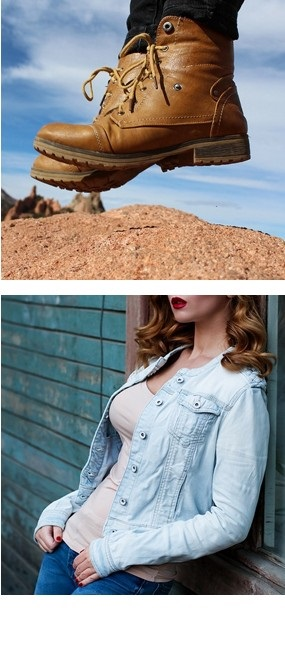
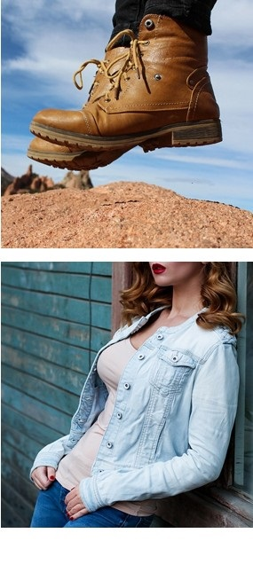

衣服、鞋、帽、包一体的时尚聚集地
400-000-000000
 时尚
时尚 质好
质好 多样
多样很多人对时尚的理解都不同，有人认为时尚即是简单，与其奢华浪费，不如朴素节俭；有时时尚只是为了标新立异；现实中很多与时尚不同步的人被指为老土、落伍；一个人为相对标准，因为是相对的，所以有其适用范围，对一些人来说是时尚的，对另一些人来说可以不是，如果时尚这个词被理解为**标准那就无法解释。
很多时尚达人都有帆布情结,喜欢帆布生活,喜欢的是一种简约、自由和随性的生活态度。随着城市白领阶层的压力越来越大,象征挣脱束缚、享受自由的帆布生活得到更多人的喜欢。
时尚潮流
是一个时期的流行风气与社会环境，时尚引领潮流，是流行文化的表现。时尚的事物可以指任何生活中的事物，例如时尚发型，时尚人物，时尚生活，潮流品牌，潮流服饰等等。
一个时期内社会环境崇尚的流行文化，特点是年轻、个性、多变和公众认同和仿效。
很多人对时尚的理解都不同，例如如何称得上时尚生活。
有人认为时尚生活，要有富裕的环境，奢华的生活模式；
也有人认为时尚即是简单，与其奢华浪费，不如朴素节俭；
有时时尚只是为了标新立异；
现实中很多与时尚不同步的人被指为老土、落伍；
然而反对者认为时尚是大众文化，以新奇、庸俗、无理性为荣，是一种没有独立价值判断的从众的生活方式，上层阶级不应去在乎所谓的时尚；
所以现时时尚总是不断变化，无法以个人眼光判断究竟如何为时尚。
时尚更是每个时代不同的流行元素，更多的时候时尚是你自己。
 
